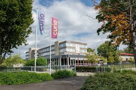

Software developer

Op de opleiding Softwrare developer leer je om te gaan met de codeer taal deze taal heeft veel verschillende soorten talen zoals html css en phyton er komen nog meer talen bij maar dit zijn de basis talen die je in het eerste jaar zult gaan leren.
Deze opleiding zit op 2 locaties namelijk Breda en Roosendaal Breda is net iets groter maar in Roosendaal krijg je gewoon net zoveel te leren als in Breda dus het maakt niet uit waar je heen zou gaan.
Zou jij nou ook de opleiding software developer willen doen zorg dan dat je een keer mee hebt gelopen met een meeloopdag want soms is het niet helemaal wat je zou verwachten maar dan kom je er tenminste achter of dit je echt leuk lijkt.